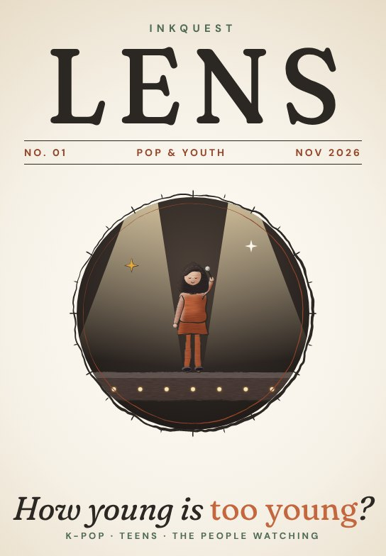

No. 01 · November 2026How young is too young?K-pop, teenage idols and the people watching them.
Big topics, short reads, a closer look.

No. 01 · November 2026How young is too young?K-pop, teenage idols and the people watching them.